คู่มือเตรียมเครื่อง Playwright + Allure
สำหรับติดตั้งเครื่องมือบน Windows เพื่อใช้ในการเขียนและรัน Automated Test ภายในทีม
เปิดหน้าดาวน์โหลด VS Code ↗ดาวน์โหลด Visual Studio Code
เข้าเว็บไซต์ Visual Studio Code แล้วดาวน์โหลดเวอร์ชันสำหรับ Windows หากหน้าเว็บเริ่มดาวน์โหลดอัตโนมัติ ให้รอไฟล์ดาวน์โหลดเสร็จ
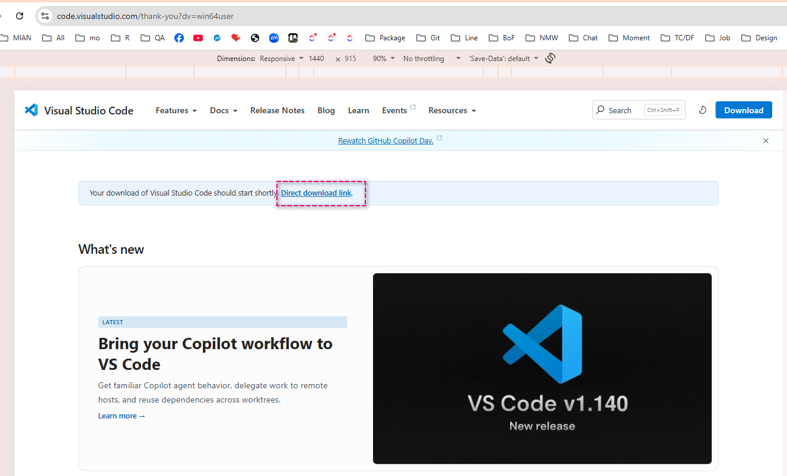
เปิดไฟล์ติดตั้ง
เมื่อดาวน์โหลดเสร็จ ให้เปิดไฟล์ติดตั้ง VS Code เพื่อเริ่ม Setup Wizard
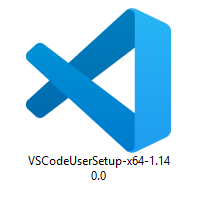
ยอมรับ License Agreement
เลือก I accept the agreement จากนั้นคลิก Next
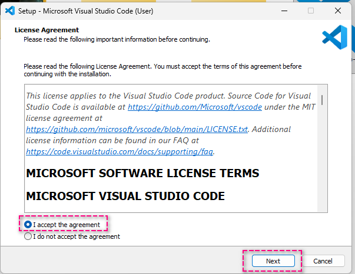
เลือกตำแหน่งติดตั้ง
สามารถใช้ตำแหน่งที่โปรแกรมกำหนดมาให้ได้ จากนั้นคลิก Next
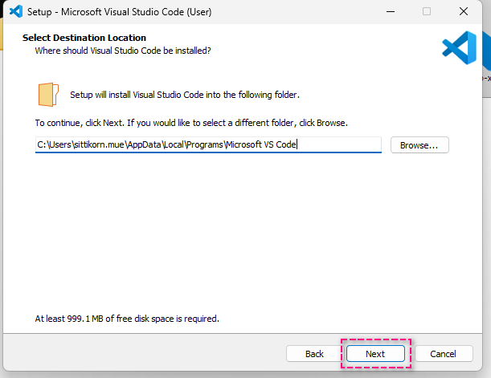
เลือก Start Menu Folder
ใช้ค่าเริ่มต้น Visual Studio Code แล้วคลิก Next
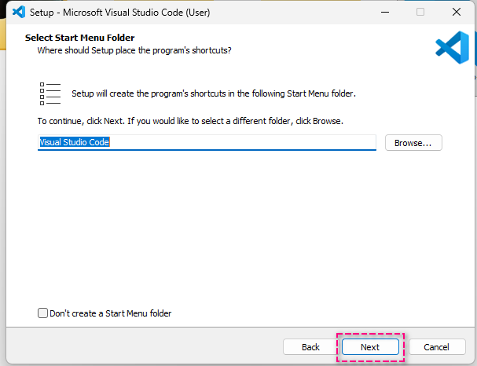
ตั้งค่า Additional Tasks และ PATH
ตรวจสอบให้เลือกอย่างน้อย Register Code as an editor for supported file types และ Add to PATH (requires shell restart) แล้วคลิก Next
code จาก Terminal / PowerShell ได้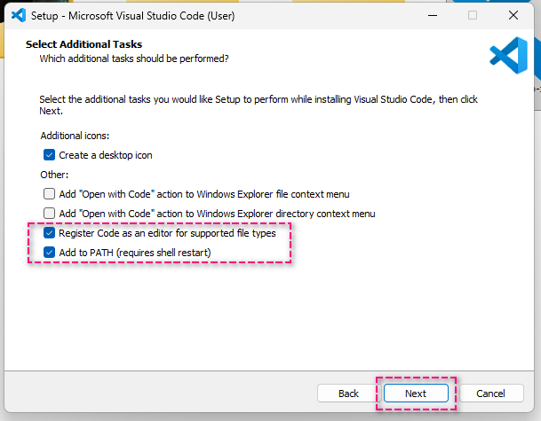
เริ่มติดตั้ง VS Code
ตรวจสอบรายการตั้งค่า จากนั้นคลิก Install และรอจนติดตั้งเสร็จ
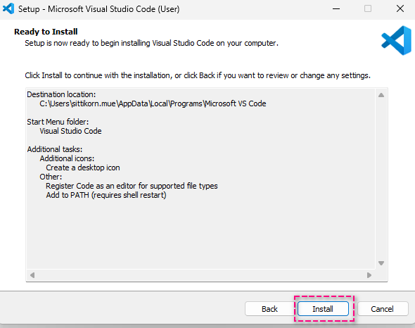
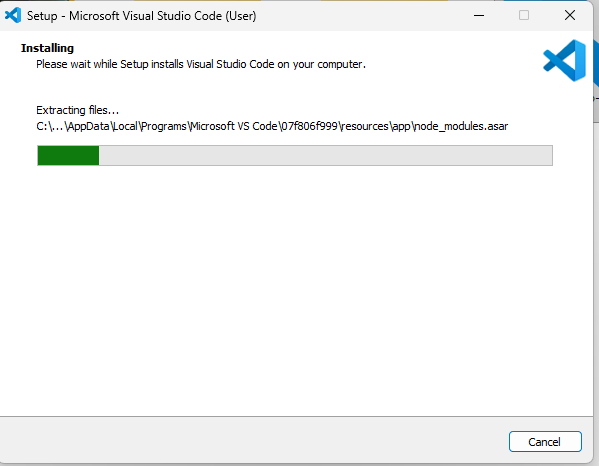
Finish และ Restart VS Code
เมื่อการติดตั้งเสร็จ ให้เลือก Launch Visual Studio Code แล้วคลิก Finish
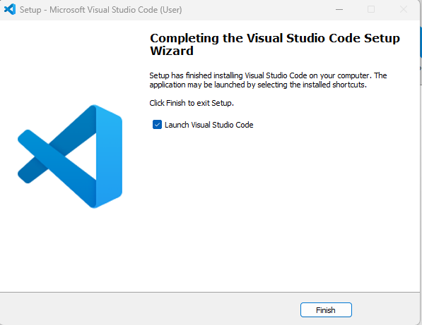
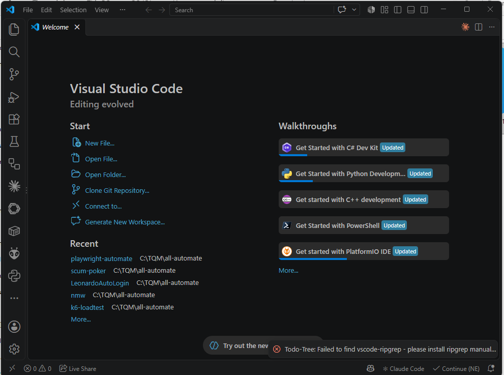
เปิดโฟลเดอร์สำหรับเก็บไฟล์ Project
ที่ VS Code เลือก File → Open Folder... จากนั้นเลือกโฟลเดอร์ที่ต้องการใช้เก็บไฟล์ Project เช่น automate-training แล้วคลิก Select Folder
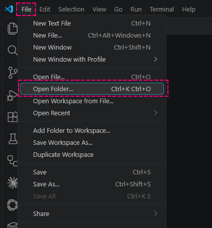
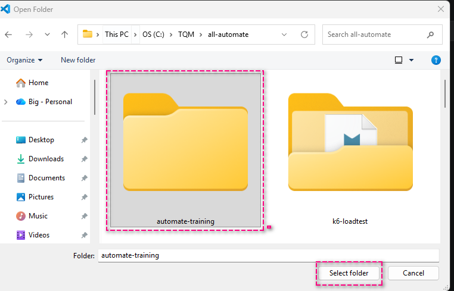
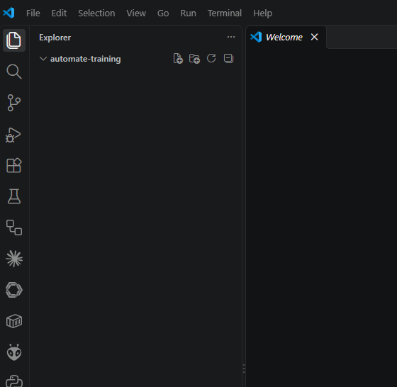
เปิด Terminal ใน VS Code
เลือกเมนู Terminal → New Terminal เพื่อเปิด PowerShell/Terminal ด้านล่างของ VS Code
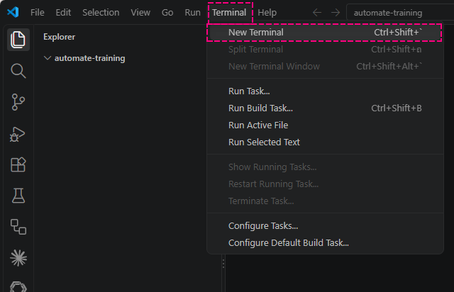
พิมพ์คำสั่งตรวจสอบ VS Code
คัดลอกคำสั่งด้านล่างไปวางใน Terminal แล้วกด Enter
code --version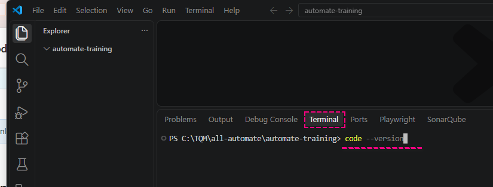
ตรวจสอบผลลัพธ์
หากติดตั้งสำเร็จ Terminal จะแสดง Version ของ VS Code และสถาปัตยกรรม เช่น x64
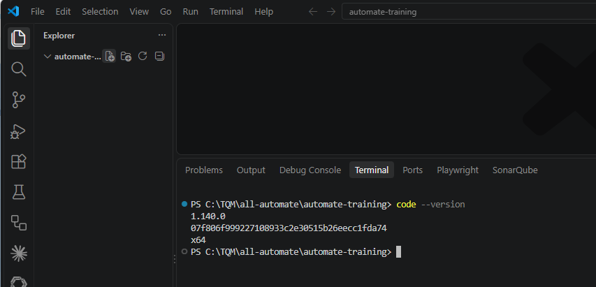
ติดตั้ง Node.js
ติดตั้ง Node.js และ npm สำหรับใช้งาน Playwright
เปิดหน้าดาวน์โหลด Node.js ↗ดาวน์โหลด Node.js สำหรับ Windows
เปิดหน้าดาวน์โหลด Node.js เลือกเวอร์ชัน LTS สำหรับ Windows และคลิก Windows Installer (.msi)
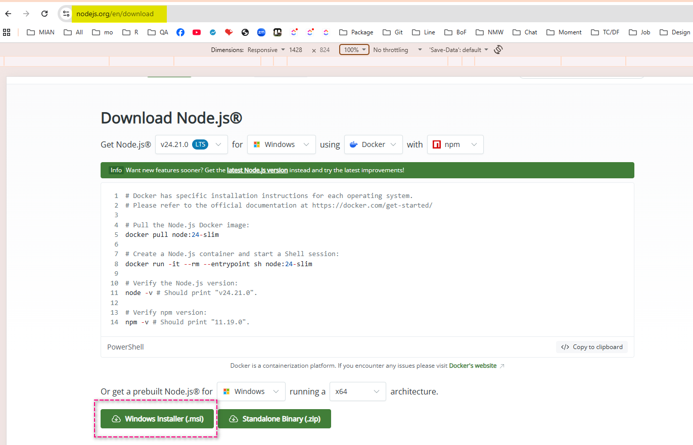
เปิดไฟล์ติดตั้ง
เมื่อดาวน์โหลดเสร็จ ให้ดับเบิลคลิกไฟล์ติดตั้ง Node.js เพื่อเริ่ม Setup Wizard
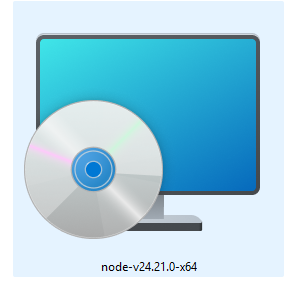
เริ่ม Setup Wizard
คลิก Next
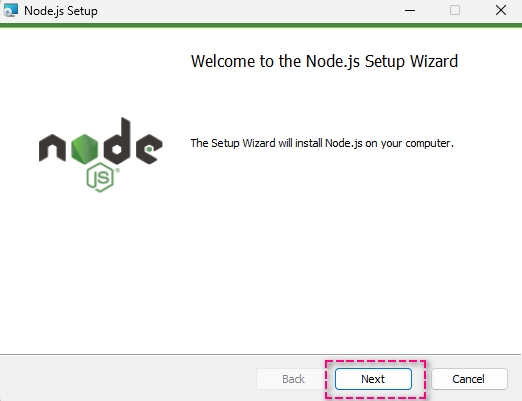
ยอมรับ License Agreement
เลือก I accept the terms in the License Agreement แล้วคลิก Next
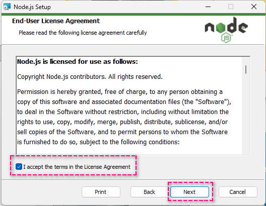
เลือกตำแหน่งติดตั้ง
ใช้ตำแหน่งเริ่มต้น C:\Program Files\nodejs\ ได้ แล้วคลิก Next
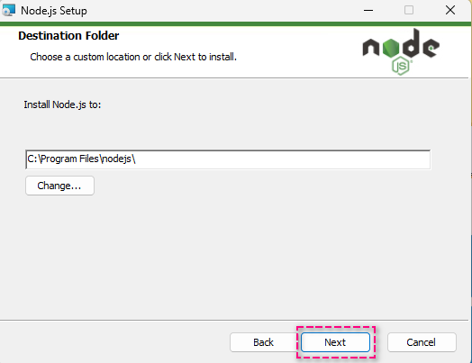
ตรวจสอบ Custom Setup
ใช้ค่าที่โปรแกรมเลือกมาให้ โดยตรวจสอบว่ามี Node.js runtime, npm package manager และ Add to PATH จากนั้นคลิก Next
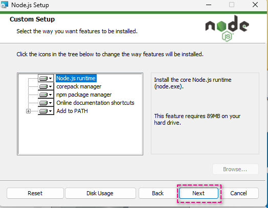
Tools for Native Modules
สำหรับการใช้งาน Playwright เบื้องต้น ไม่จำเป็นต้องเลือก Automatically install the necessary tools ให้คลิก Next ได้เลย
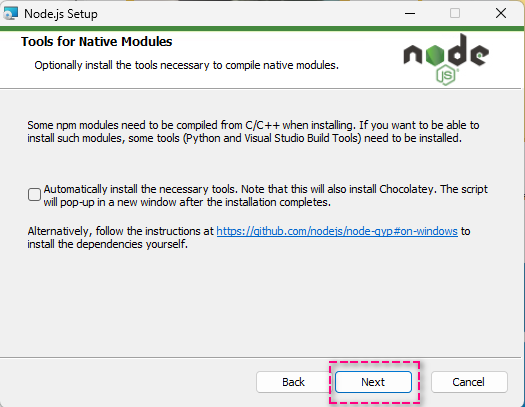
ติดตั้ง Node.js
คลิก Install และรอจนติดตั้งเสร็จ
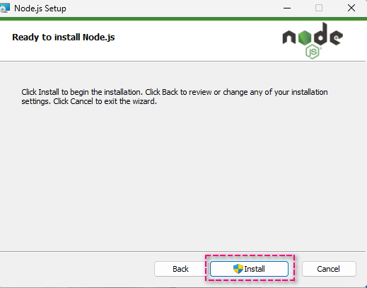
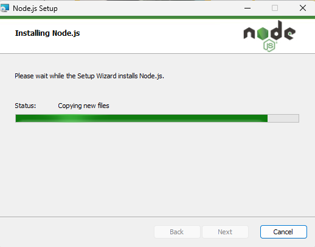
Finish และเปิด VS Code ใหม่
คลิก Finish จากนั้นปิด VS Code/Terminal ที่เปิดอยู่ แล้วเปิด VS Code ใหม่ เพื่อให้ PATH ของ Node.js ถูกโหลด
node และ npm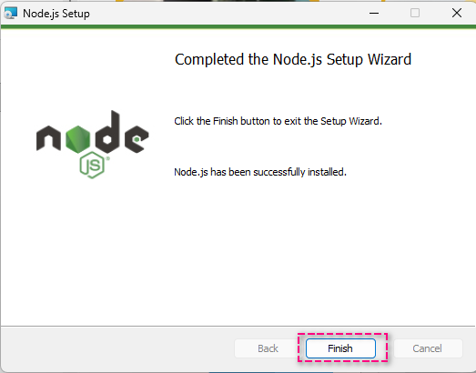
ตรวจสอบ Node.js
คัดลอกคำสั่งนี้ไปวางใน Terminal แล้วกด Enter
node -v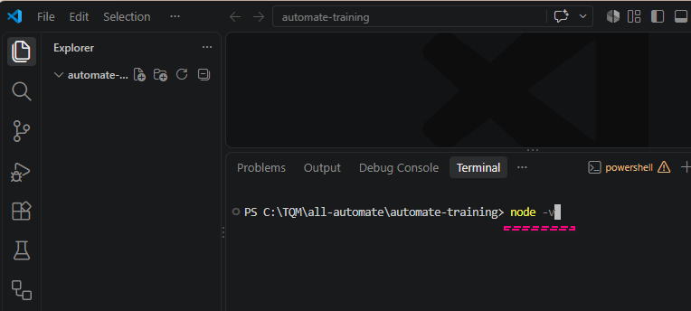
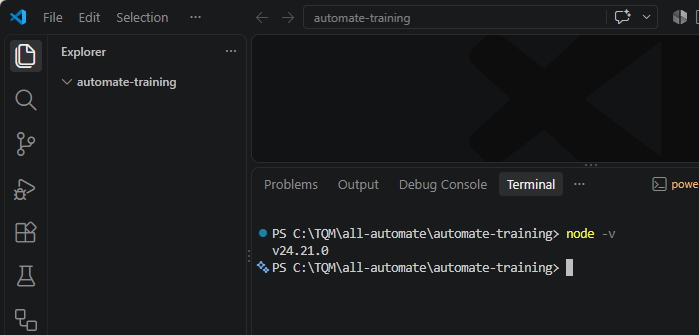
ตรวจสอบ npm
npm จะติดตั้งมาพร้อมกับ Node.js ให้ตรวจสอบด้วยคำสั่ง:
npm -v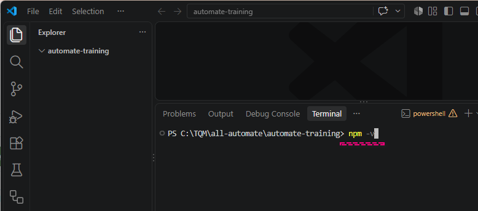
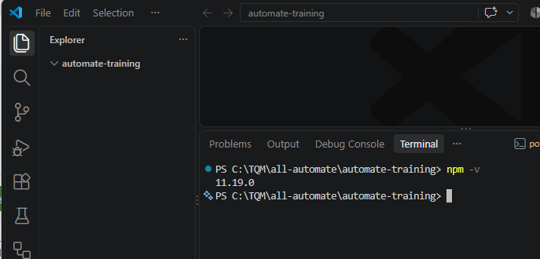
node -v และ npm -v แสดงหมายเลข Version แสดงว่า Node.js และ npm พร้อมใช้งานแล้วติดตั้ง Playwright
ติดตั้ง VS Code Extension และสร้าง Playwright Test Project สำหรับเริ่มเขียน Automated Test
ติดตั้ง Playwright Test for VSCode
1. คลิกไอคอน Extensions ที่แถบด้านซ้ายของ VS Code
2. ที่ช่องค้นหา พิมพ์ playwright
3. เลือก Playwright Test for VSCode ที่พัฒนาโดย Microsoft แล้วคลิก Install
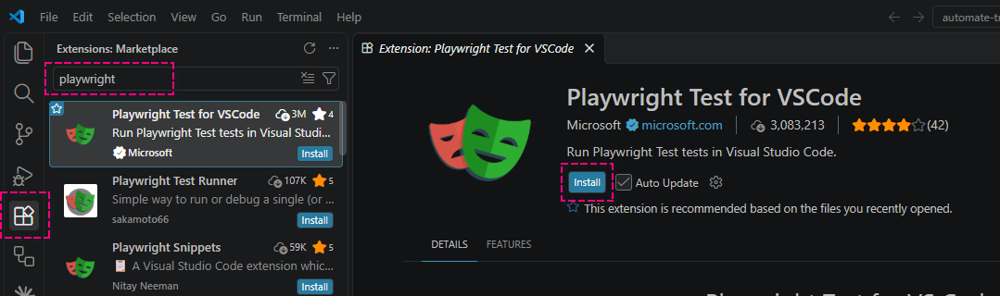
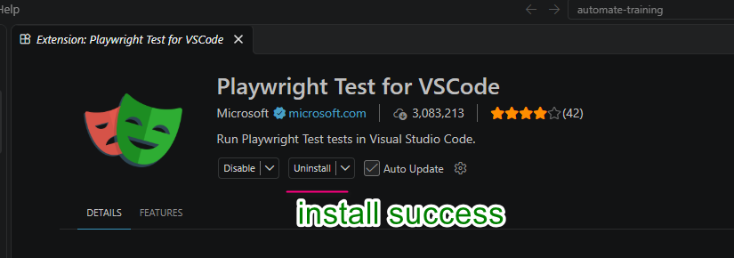
สร้าง Playwright Project
เปิด Terminal ที่ Project Folder แล้วรันคำสั่งด้านล่าง
npm init playwright@latestครั้งแรก npm อาจถาม Ok to proceed? (y) ให้พิมพ์ y แล้วกด Enter เพื่ออนุญาตให้ดาวน์โหลดตัวสร้าง Project
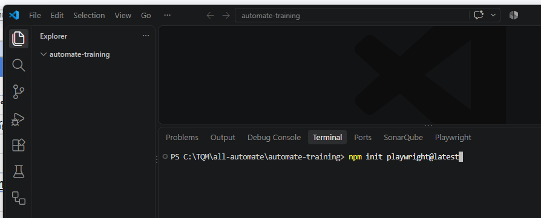
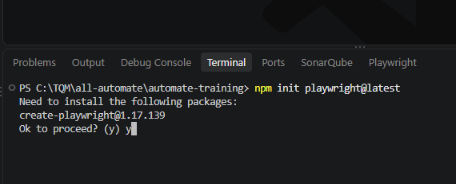
กำหนดค่าตอนสร้าง Project
เลือกภาษาที่ใช้เขียน Test โดย TypeScript ช่วยตรวจชนิดข้อมูลและช่วยลดข้อผิดพลาดตอนเขียนโค้ด เหมาะสำหรับใช้เป็นมาตรฐานของ Project
กำหนด Folder สำหรับเก็บ Test Case ใช้ค่า
tests เพื่อให้ไฟล์ทดสอบรวมอยู่ในตำแหน่งเดียวและหาได้ง่ายGitHub Actions ใช้รัน Test อัตโนมัติบน GitHub เช่น เมื่อ Push หรือ Pull Request สำหรับการเรียนและรันในเครื่องครั้งนี้ยังไม่ใช้ จึงเลือก No
ให้ Playwright ดาวน์โหลด Browser ที่ใช้ทดสอบ เช่น Chromium, Firefox และ WebKit หากไม่ติดตั้ง Browser จะยังรัน Browser Test ไม่ได้
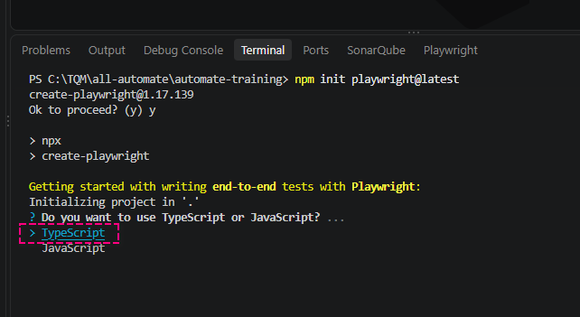
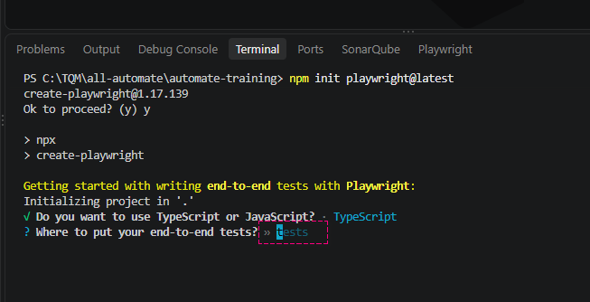
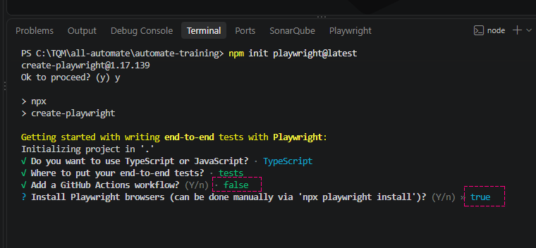
package.json, ติดตั้ง @playwright/test, สร้าง playwright.config.ts, สร้าง Example Test และดาวน์โหลด Browser ที่จำเป็น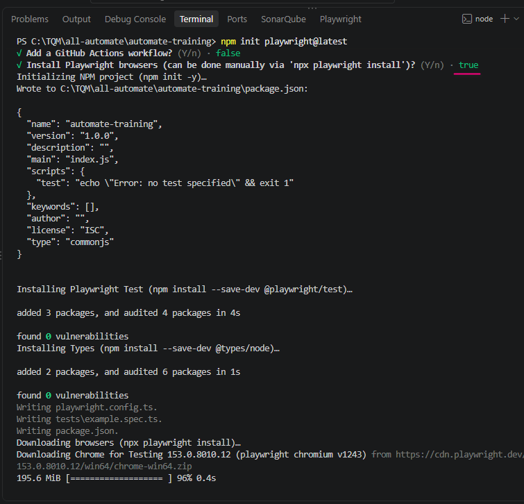
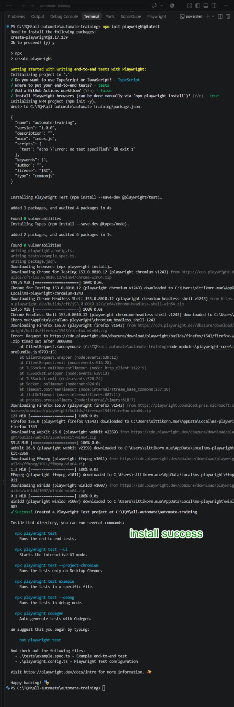
timed out after 30000ms ตอนดาวน์โหลด Firefox หนึ่งครั้ง แต่ Playwright ดาวน์โหลดซ้ำและทำงานต่อได้Success! Created a Playwright Test project ที่ด้านล่างของ Terminal หากขึ้นข้อความนี้ แสดงว่าสร้าง Project สำเร็จแล้วทำความรู้จักไฟล์ Example Test
tests/example.spec.ts ที่ Playwright สร้างให้หลังติดตั้งหลังสร้าง Project สำเร็จ จะมีตัวอย่าง Test อยู่ในโฟลเดอร์ tests ให้คลิกเปิดไฟล์ example.spec.ts เพื่อดูรูปแบบการเขียน Test เบื้องต้น
import { test, expect } from '@playwright/test';นำเครื่องมือ
test และ expect จาก Playwright มาใช้ โดย test ใช้สร้าง Test Case และ expect ใช้ตรวจสอบผลลัพธ์ว่าตรงตามที่เราคาดหวังหรือไม่เปิดเว็บไซต์
https://playwright.dev/ แล้วตรวจสอบว่า Title ของหน้าเว็บมีคำว่า Playwrightเปิดเว็บไซต์ Playwright → คลิกลิงก์ Get started → ตรวจสอบว่ามีหัวข้อ Installation แสดงอยู่บนหน้าเว็บ
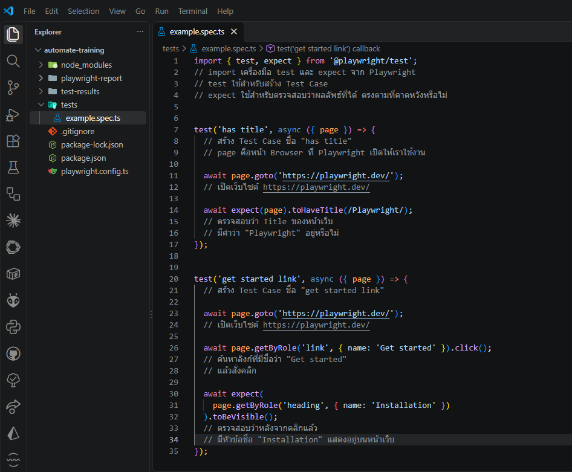
Run Test ผ่าน Terminal
รันคำสั่ง:
npx playwright testคำสั่งนี้จะค้นหา Test ใน Project แล้วรันตาม Browser/Project ที่กำหนดไว้ใน playwright.config.ts จากตัวอย่างมี 2 Test Case และรันบน Chromium, Firefox และ WebKit จึงรวมเป็น 6 tests
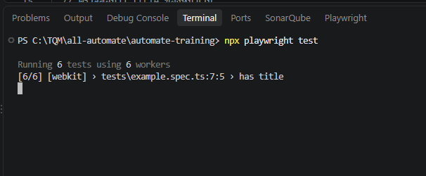
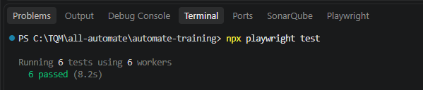
เปิด Playwright HTML Report
หลัง Run Test สามารถเปิด Report ด้วยคำสั่ง:
npx playwright show-reportPlaywright จะเปิด Web Server ในเครื่องและแสดง Report ผ่าน Browser เช่น http://localhost:9323 สามารถดูว่า Test ไหน Passed / Failed และดูผลแยกตาม Browser ได้
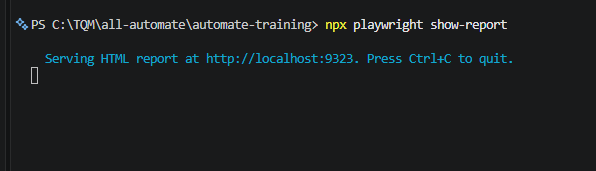
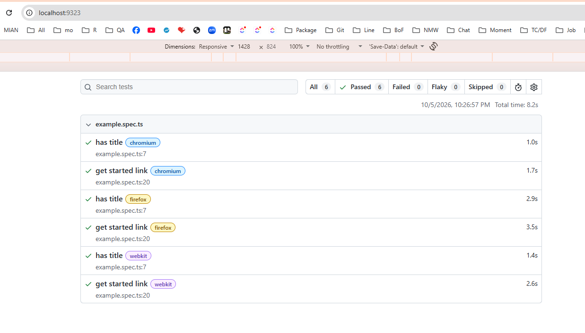
ตั้งค่า Playwright Report, Screenshot, Video และ Trace
เปิดไฟล์ playwright.config.ts แล้วแทนค่าตั้งต้นด้วย Config ด้านล่าง เพื่อให้เปิด HTML Report อัตโนมัติ รัน Browser แบบมองเห็นหน้าจอ และเก็บ Screenshot, Video และ Trace ทุกครั้ง
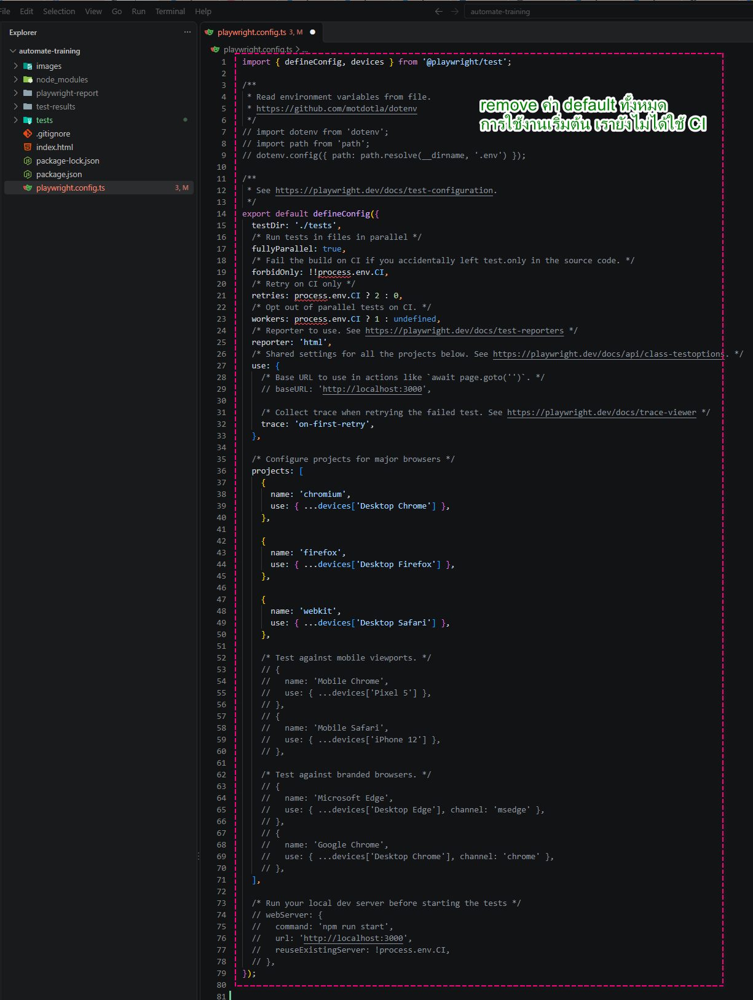
import { defineConfig } from '@playwright/test';
export default defineConfig({
reporter: [
['html', { open: 'always' }]
],
use: {
headless: false,
browserName: 'chromium',
screenshot: 'on',
video: 'on',
trace: 'on',
},
});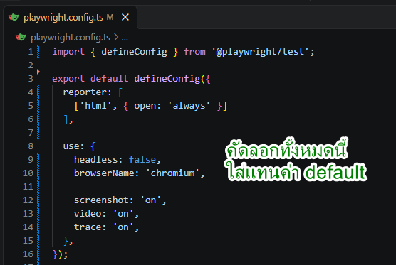
open: 'always' = เปิด HTML Report ทุกครั้งหลังรัน Testscreenshot: 'on' = เก็บ Screenshot ทุกครั้งvideo: 'on' = อัด Video ทุกครั้งtrace: 'on' = เก็บ Trace ทุกครั้ง เพื่อนำมาเปิดดูย้อนหลังได้Report
never = ไม่เปิด Report อัตโนมัติon-failure = เปิด Report เฉพาะเมื่อ Test FailScreenshot
only-on-failure = เก็บภาพเฉพาะเมื่อ Test Failoff = ไม่เก็บ ScreenshotVideo
retain-on-failure = เก็บ Video เฉพาะ Test ที่ Failon-first-retry = อัด Video ตอน Retry ครั้งแรกoff = ไม่อัด VideoTrace
retain-on-failure = เก็บ Trace เฉพาะ Test ที่ Failon-first-retry = เก็บ Trace ตอน Retry ครั้งแรกoff = ไม่เก็บ Traceสามารถเลือกใช้ให้เหมาะกับการทำงานของแต่ละ Project ได้
รัน Test และเปิด Report อัตโนมัติ
ตัวอย่างนี้รันเฉพาะไฟล์ tests/example.spec.ts และใช้ --headed เพื่อให้เห็น Browser ขณะ Test ทำงาน
npx playwright test tests/example.spec.ts --headed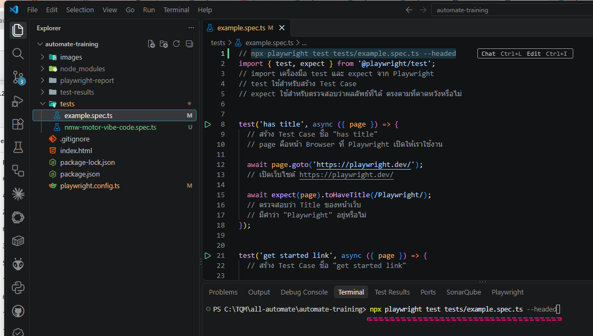
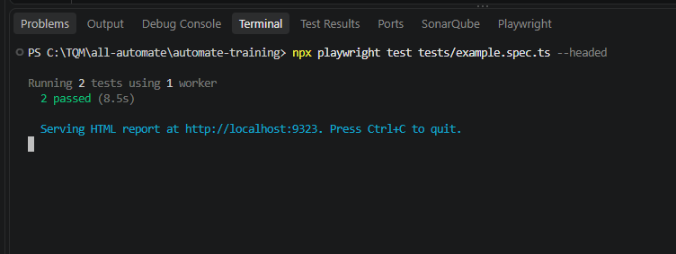
ข้อความ
2 passed หมายถึง Test ผ่านทั้งหมด 2 Test Case และเนื่องจากตั้งค่า Report เป็น open: 'always' ระบบจึงเริ่มเปิด HTML Report อัตโนมัติที่ http://localhost:9323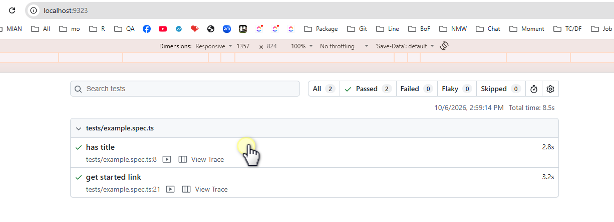
คลิกเข้าไปที่ Test Case จะเห็นรายละเอียดขั้นตอน รวมถึง Screenshot, Trace และ Video ที่เก็บไว้จากการรันครั้งนั้น
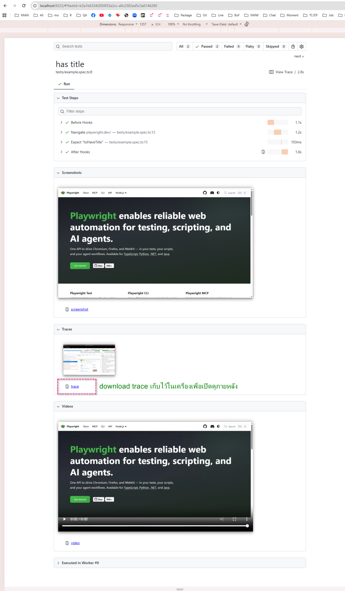
ดาวน์โหลด Trace มาเปิดดูในเครื่อง
ในหน้า Report คลิก trace เพื่อดาวน์โหลดไฟล์ Trace จากนั้นแตกไฟล์ออกเป็นโฟลเดอร์ เพื่อใช้เปิดดูรายละเอียดย้อนหลัง เช่น Action, Timeline, Network และภาพในแต่ละช่วงของ Test
หากต้องการดูตำแหน่งโฟลเดอร์ ให้คลิกขวาที่โฟลเดอร์ trace → Properties แล้วคัดลอก Path
จากนั้นใช้คำสั่ง npx playwright show-trace ตามด้วย Path ของโฟลเดอร์ Trace
npx playwright show-trace C:\Users\sittikorn.mue\Downloads\traceใช้สำหรับเปิดดูเหตุการณ์ที่เกิดขึ้นระหว่างการรัน Test แบบย้อนหลัง สามารถเลือกแต่ละ Action จาก Timeline เพื่อดูว่า Playwright ทำอะไร ณ ช่วงเวลานั้น พร้อมตรวจสอบภาพหน้าเว็บ, เวลาในการทำงาน, Network และข้อมูลประกอบอื่น ๆ ช่วยให้หาสาเหตุของ Test Fail ได้ง่ายขึ้น
Run Test ผ่าน Playwright Test for VSCode Extension
วิธีนี้ใช้ Playwright Test for VSCode Extension ที่ติดตั้งไว้ก่อนหน้านี้ Extension จะเพิ่มเมนู Testing และ Test Explorer เข้ามาใน VS Code เพื่อให้รัน Test ได้จากหน้าจอโดยตรง
วิธีรัน: คลิกไอคอนรูป ขวดทดลอง (Testing) ทางซ้ายของ VS Code → เลือก Test Case ที่ต้องการ → กด ▶ Play แล้วรอดูผล Passed หรือ Failed ภายใน VS Code
หลังรันเสร็จ VS Code จะแสดงผลบริเวณ Test Explorer และ Test Results หากผ่านจะเห็นเครื่องหมาย ✓ สีเขียว รวมถึงจำนวน Test ที่ผ่าน เช่น 1 passed
ต่างจากการรันผ่าน Terminal อย่างไร?
| หัวข้อ | รันด้วยคำสั่งใน Terminal | รันด้วย Playwright Extension |
|---|---|---|
| วิธีรัน | พิมพ์ npx playwright test | คลิก ▶ Play จาก Test Explorer |
| เหมาะกับ | รันหลาย Test, รันทั้งชุด, ใช้ใน Script หรือ CI/CD | รันทีละ Test ระหว่างพัฒนา หรือทดสอบจุดที่กำลังแก้ |
| การเลือก Test | เลือก Test ผ่านคำสั่งและตัวเลือกที่พิมพ์ต่อท้ายคำสั่ง | เห็นรายชื่อ Test แล้วคลิกเลือกได้ทันที |
| การดูผล | ดูข้อความ Passed / Failed ใน Terminal และเปิด Report เพิ่มได้ | ดูสถานะ ✓ / ✕ และ Test Results ภายใน VS Code ได้ทันที |
| ข้อดี | เหมาะกับการรันทั้งชุด การใส่ตัวเลือกเพิ่มเติม และการนำไปใช้กับ Automation หรือ CI/CD | ใช้งานง่าย เห็นภาพ เหมาะกับผู้เริ่มต้นและการ Debug |
Extension เหมาะเวลาผู้ใช้กำลังเขียนหรือแก้ Test เพราะมองเห็น Test Case และกด ▶ ได้ทันที
Terminal เหมาะเวลาต้องการรันหลาย Test, ใส่ตัวเลือกเพิ่มเติม หรือเตรียมนำ Test ไปใช้กับ Automation / CI/CD
ขั้นตอนถัดไป: Allure Report
หลังจาก Playwright พร้อมใช้งานแล้ว ขั้นตอนถัดไปจะเป็นการติดตั้งและตั้งค่า Allure Report